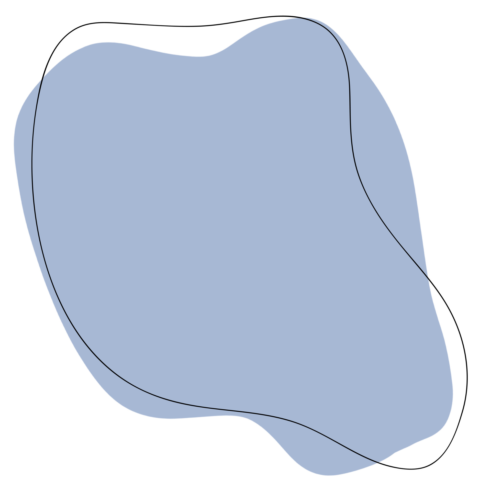

I am Dipen Jamkatel
I am a passionate animation artist with a knack for bringing characters and stories to life. With a background in Animation and Game Development and a love for Natural animation, I have worked on a variety of projects on my college ranging from [2D,3D and video games]. Their unique style and attention to detail have earned them recognition in the industry, making them a sought-after talent for creative collaborations. When not animating, I prefer to learn about the environment and the complex mechanisms of biological creatures.
VIEW RESUME CONTACT ME!!
